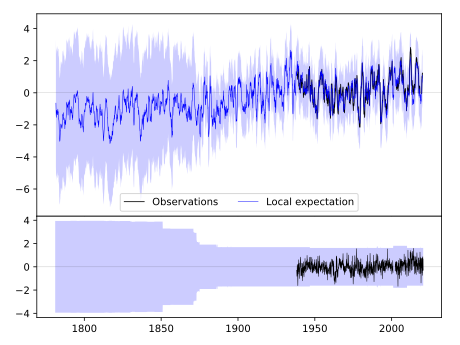
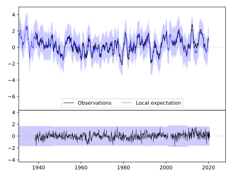
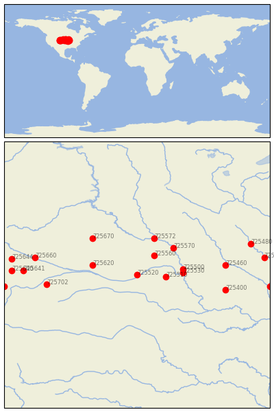

GRAND-ISLAND/------- [USA---------]


| Neighbour | Name | Country | Distance | Lon/Lat | Years |
|---|
| 725520 | GRAND-ISLAND/------- | USA--------- | 0 | -98.3, 41.0 | 1938-2020 |
| 725510 | LINCOLN/MUNICIPAL AR | USA | 126 | -96.8, 40.9 | 1886-2020 |
| 725560 | NORFOLK/KARL STEFAN | USA | 134 | -97.4, 42.0 | 1946-2020 |
| 725620 | STAPLETON 5W | USA | 200 | -100.6, 41.5 | 1875-2020 |
| 725530 | OMAHA | USA | 201 | -95.9, 41.1 | 1991-2000 |
| 725500 | OMAHA, NEBRASKA | USA | 203 | -95.9, 41.3 | 1873-2020 |
| 725570 | SIOUX CITY | USA | 221 | -96.4, 42.4 | 1889-2020 |
| 725572 | YANKTON | USA | 223 | -97.4, 42.9 | 1873-1980 |
| 725670 | VALENTINE/MIL------- | USA--------- | 284 | -100.6, 42.9 | 1886-2020 |
| 725460 | DES MOINES, IOWA | USA | 388 | -93.7, 41.5 | 1878-2020 |
| 725400 | SPICKARD 7 W | USA | 398 | -93.7, 40.2 | 1893-2019 |
| 725702 | LE ROY | USA | 399 | -103.0, 40.5 | 1889-1980 |
| 725660 | SCOTTSBLUFF/COUNTY-A | USA--------- | 452 | -103.6, 41.9 | 1944-2017 |
| 725641 | PINE BLUFFS 5W | USA | 494 | -104.2, 41.2 | 1893-2019 |
| 725480 | WATERLOO/WSO-AP----- | USA--------- | 520 | -92.4, 42.6 | 1950-2020 |
| 725640 | CHEYENNE WSFO AP | USA | 544 | -104.8, 41.2 | 1871-2020 |
| 725644 | CHUGWATER | USA | 549 | -104.8, 41.8 | 1893-2019 |
| 725450 | CEDAR-RAPIDS/AP----- | USA--------- | 558 | -91.7, 41.9 | 1953-2020 |
| 725642 | WATERDALE | USA | 585 | -105.2, 40.4 | 1902-1980 |
| 725405 | KEOKUK | USA | 585 | -91.4, 40.4 | 1871-1980 |